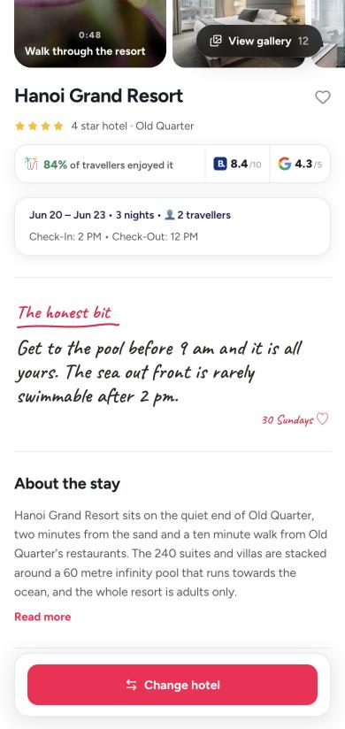
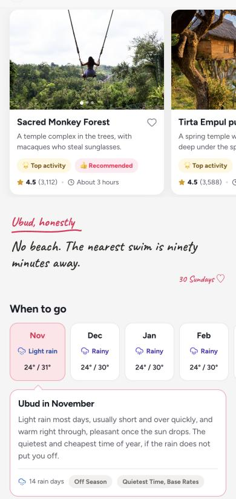
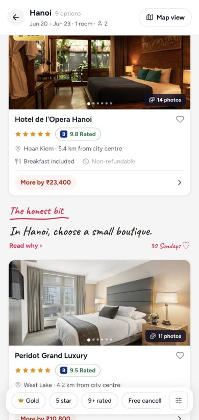
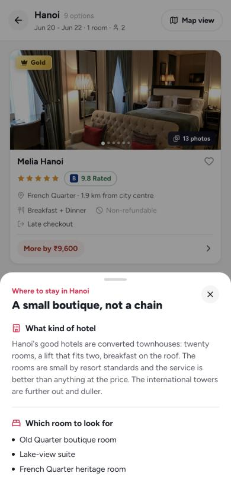

The one thing we would tell a friend before they booked, written by hand on the page. It used to be a postcard of six or seven ticks and crosses, which read like a list the hotel had to publish. Now it is one or two lines in handwriting, with a pink underline, signed by us. It shows on the hotel page, the region page and the hotel list. Open the links on a phone or in a narrow window.
The hotel note in the prototype is a sample. Hotels and prices in the prototype are samples too.
Get to the pool before 9 am and it is all yours. The sea out front is rarely swimmable after 2 pm.
30 Sundays ♡
The first thing after the stay dates, before About the stay. Titled The honest bit. The Honest bit chip in the section bar jumps to it.
After Things to do, before When to go. Titled with the city: Ubud, honestly.
Between the hotels, after the second one (or after the last, if there are fewer). Says what kind of stay to choose in that city, with Read why, which opens the stay guide.




Written straight on the white page. No card, no paper, no tinted fill, so it reads as a note in the margin rather than another section.
A small pink title with a hand-drawn pink underline. The note, in larger dark handwriting. Signed 30 Sundays ♡ in pink, at the bottom right. On the hotel list, Read why sits at the bottom left in pink.
Caveat for all of it. Title 21, note 24, sign-off 15. Read why stays in the app font, so it reads as something to tap.
One or two sentences, under 110 characters for a hotel and under 95 for a region. That is two or three handwritten lines on a phone. The app does not cut a note short, so the limit is for whoever writes it.
The catch is what makes it honest. Lead with one real good thing if it fits, then the catch. If both do not fit, write the catch alone.
Specific: a time, a distance, a number. Plain words, the way you would say it to a friend. No marketing words, no lists, no em dashes.
Hotels: written for each hotel by the content team, from our own stays and traveller reviews. Regions: the first good point and the first catch from the region guide we already hold, joined when they fit under 95 characters, otherwise the catch alone. Hotel list: what kind of hotel to choose in that city, from the same guide.
| Example | |
|---|---|
| Good | No beach. The nearest swim is ninety minutes away. |
| Good | Thirty kilometres of clean, swimmable beach. It lacks the character of Hanoi or Hoi An. |
| Good | In Hanoi, choose a small boutique. |
| Too long | Terraces, river gorges and temples all within twenty minutes of town. No beach. The nearest swim is ninety minutes away. |
| Not honest | A stunning resort with world-class service and breathtaking views. |
| A list | Great pool. Big rooms. Busy beach. Pricey bar. Building work. |
Four other handwritten styles were weighed against this one. They stay side by side at honest-compare.html. Screenshots from the live prototype at 30sundays-app-two.vercel.app.